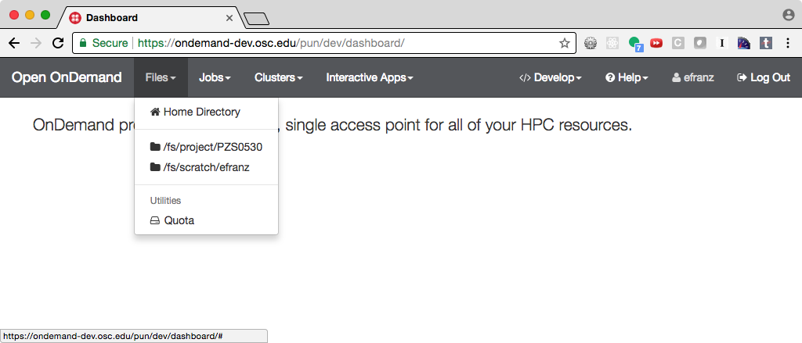

Starter Ruby Application
This document walks through creating a hello world application in Ruby with the Sinatra web framework.
config.ru for Sinatra
The first thing we need for OnDemand to recognize this directory is a config.ru file.
For Sinatra this is the config.ru that you need.
# frozen_string_literal: true
require_relative 'app'
run App
config.ru for Ruby on Rails
This document does not cover Ruby on Rails, but
this config.ru is given nonetheless for readers interested
in building Ruby apps based on Ruby on Rails.
# frozen_string_literal: true
require_relative 'config/environment'
run Rails.application
Rails.application.load_server
Install dependencies
The application won't boot with just the config.ru, though it will try.
What you need now is to install the gems (the ruby dependencies).
We need a Gemfile to tell bundler (Ruby's application for dependencies)
what gems to install. Here's that file.
# frozen_string_literal: true
source 'https://rubygems.org'
gem 'sinatra'
With the Gemfile written, we can now install the dependencies
into vendor/bundle. Issue these commands to do that.
bundle config path --local vendor/bundle
bundle install
Write the app.rb file
Still, the app will not boot at this point. The config.ru is looking
to load the app.rb file which does not exist yet.
The app.rb file that will actually import Sinatra and implement your routes.
Here's the simplest version of this file returning Hello World on the root URL.
require 'sinatra/base'
class App < Sinatra::Base
get '/' do
'Hello World'
end
end
Publish App
Publishing an app requires two steps:
Updating the
manifest.ymlto specify the category and optionally subcategory, which indicates where in the dashboard menu the app appears.Having an administrator checkout a copy of the production version to a directory under
/var/www/ood/apps/sys.
Steps:
Add category to manifest so the app appears in the Files menu:
name: Quota description: Display quotas icon: fa://hdd-o +category: Files +subcategory: Utilities
Version these changes. Click Shell button on app details view, and then
committhe changes:git add . git commit -m "update manifest for production" # if there is an external remote associated with this, push to that git push origin master
As the admin,
sudo copyorgit clonethis repository to production.# as sudo on OnDemand host: cd /var/www/ood/apps/sys git clone /users/PZS0562/efranz/ondemand/dev/quota
Reload the dashboard.

Fig. 7 Every user can now launch the Quota from the Files menu.
Warning
Accessing this new app for the first time will cause your NGINX server to restart, killing all websocket connections, which means resetting your active web-based OnDemand Shell sessions.
Ruby Wrapper
Applications can provide a bin/ruby file within their project
to use a different version of ruby. Here's an example of such a file.
Warning
Ensure this file is executable permissions, otherwise it will not work.
#!/bin/bash
# OnDemand uses ruby 3.3, but this application uses 3.0.
module load ruby/3.0
exec /bin/env ruby "$@"